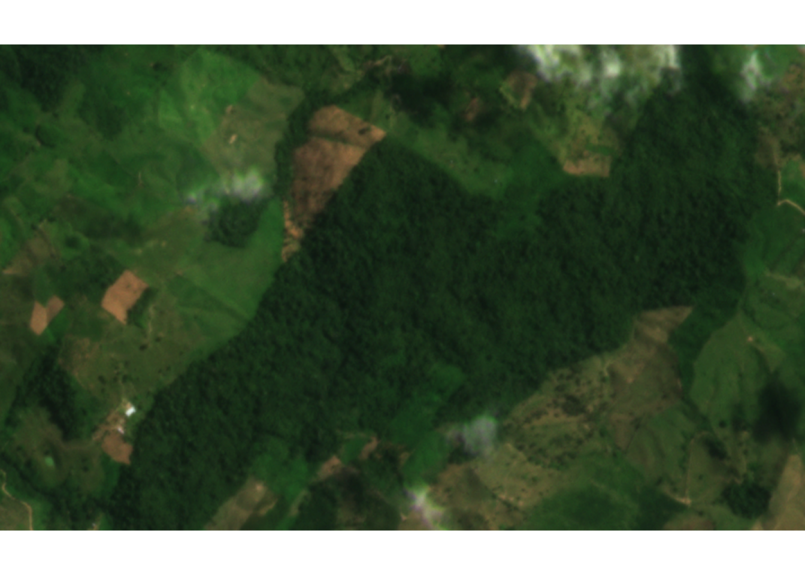
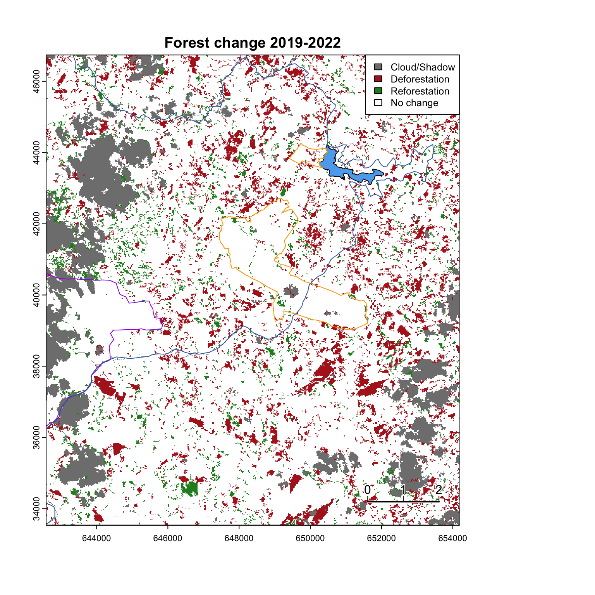
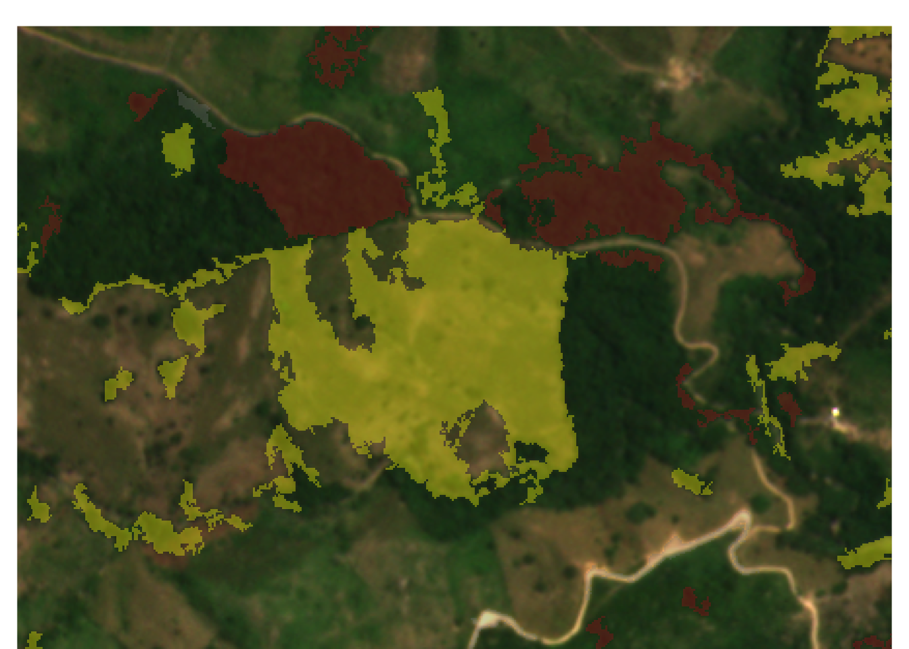

Deforestation around the FCAT Reserve in northwest Ecuador: 2019-2022
1 Summary
- Monitoring deforestation in tropical areas with near persistent cloud cover is been a long-standing challenge, but is essential to track progress towards ambitious goals to end deforestation by 2030
- State of the art deforestation alert systems (such as the GLAD Deforestation Alerts) are incredibly useful at broad spatial scales, but may fail to detect deforestation reliably in areas with high cloud cover, such as western Ecuador, where only a small fraction of original forest cover remains and deforestation continues unchecked in many areas.
- FCAT is a community-based nonprofit in western Ecuador whose long term goal is to reverse forest loss through capacity building, research, and direct conservation.
Here, we:
Generate a high spatial resolution (3m) land cover map of the FCAT reserve and surrounding areas
Develop a machine learning algorithm to identify deforestation hot spots in the areas surrounding the FCAT reserve in near real time (depending on availability of imagery)
Key takeaways
Annual deforestation rates in the areas surrounding the FCAT Reserve were 3.7% / yr between 2019-2022, approximately 6.8x higher than best available contemporary estimates for this time period
We were able to predict with the presence of forest vs. non-forest with 91.8% accuracy, tested against high-resolution drone imagery.
Our approach can detect deforestation in near real-time with the potential to be scaled to larger areas in western Ecuador

2 Deforestation: 2019-2022
Using two relatively-cloud free images from PlanetLabs of the areas around the FCAT Reserve taken in 2019 and 2022 (Figure 1), we trained a machine learning algorithm (jump to detailed methods) to classify land use type as either forest or non-forest. Below are the PlanetLab satellite images and resulting land cover maps, with outlines of the FCAT Reserve, the nearby Bilsa Reserve, and the Mache-Chindul Reserve.


For the remaining analyses, we focus in on a 15,000 ha region surrounding the FCAT reserve shown in red below to minimize complications due to cloud cover (Figure 2).
Using the land cover classification images from 2019 and 2022, we conducted a land cover change analysis to quantify deforestation rates and map hot spots of deforestation across our focal zone. Deforestation only includes pixels that were classified as forest in 2019 and classified as non-forest in 2022. We did not count as deforestation if a pixel was forest in 2019 but then classified as cloud or shadow in 2022.
Previous estimates of deforestation in areas of western Ecuador at large spatial scales and resolution calculated ~10% deforestation between 2000-2008 within the Mache-Chindul Reserve (Van Der Hoek 2017) and 4.2% net deforestation from 2016-2018 (Sierra, Calva, and Guevara 2021).
2.1 Deforestation hotspots
A key advantage of this approach gives us is the ability to detect deforestation hotspots across the landscape. Below in Figure 4, we highlight a few deforestation hot spots detected by the FCAT deforestation detection system, showing satellite imagery from 2019, the overlay of the FCAT deforestation detection system, and the satellite image from 2022.


We can compare our deforestation rates and map of deforestation hotspots with Global Forest Watch’s Integrated deforestation alerts, which provides deforestation alerts from 2015-present using a combination of GLAD-L, GLAD-S2, and RADD alert systems. We consider this the best available contemporary deforestation alert system that covers the 2019-2022 sampling period. We subset the GFW integrated deforestation alerts to our time period of interest 2019-2022 for all comparisons below.
However, there appears to be a large gap in data from the GFW alert system on the eastern half of our focal area (Figure 5), which simultaneously limits its utility in comparisons and also highlights the need for alternative methods of detecting deforestation in this part of the world.
Another point of comparison of deforestation rates in the area comes from the Global Forest Change 2000-2021 dataset by Hansen et al., which tracks changes from a forest to non-forest state from 2000-2021 at a 30m spatial resolution. The available data does not completely overlap with our analysis (2019-2022), thus not allowing us to make direct comparisons. However, we can estimate deforestation rates over time using this data (Figure 6).
The Global Forest Change dataset estimates average deforestation rates to be 0.52% across the time period 2001-2021, with peaks as high as 3% annually.
3 Issues / Caveats
3.1 Clouds remain a challenge
Clouds that are present in either 2019 or 2022 prevent us from detecting any land cover change in the areas affected by clouds. For this analysis, we are using images with the least amount of cloud cover of our focal area.

Additionally, the leading edge of clouds (especially wispy clouds) are frequently sometimes classified by the model as non-forest. You can see this in the example below of a cloud over Bilsa Reserve, which is known to be mostly forest.

3.2 Cacao classified as forest
Tree crops, such as cacao, banana, and oil palm, have the potential to be misclassified as forest because their appearance to satellites in the visible and NIR spectrum is similar to that of a true forest canopy, especially when the crops are planted in high density monoculture. Using very high resolution drone imagery as a ground-truth, we can see an example below of a young cacao plantation being mis-classified as forest in the 2022 land cover predictions.
3.3 Reforestation
The mis-classification of tree crops as forest can have implications for estimates of reforestation as well as for deforestation. Following the drone example above, we see that in 2019, the cacao plantation highlighted above was in the early stages of being established and correctly classified as non-forest by the land cover model. However, by 2022, the cacao plants had grown enough to be determined to be forest by the model, as as a result, this was mapped as potential reforestation.
More generally, detecting ‘reforestation’ seems to be more challenging that detecting deforestation, potentially leading to more false positives. Figure 9 shows where areas in green were predicted by the model to be cases of reforestation- transitioned from non-forest in 2019 to forest in 2022.

We highlight a few more examples of areas where were reforestation was predicted, but likely a false positive. In the first two examples below, the model is predicting a large area of reforestation shown in yellow, but it’s difficult to tell from the satellite imagery alone whether this is a cacao plantation growing in size, greening of a pasture, or some other process. Ground truthing in the field can help address this issue in future versions of the model. Cloud edges being classified as non-forest above also creates issues with overestimating reforestation, as shown in the third example.


4 Methods
All analysis code is publicly available here.
To classify land cover, we used Extreme Gradient Boosting (Chen and Guestrin 2016) in the ‘xgboost’ R package (Chen et al. 2015). Extreme Gradient Boosting is a powerful and flexible machine learning algorithm commonly used in classification tasks.
We began the analysis by selecting a two relatively cloud free images from Planet Labs after viewing their entire available catalog via Planet Explorer. Satellite images were provided courtesy of Planet Labs PBC through their Education and Research Program.
We downloaded two 4-band, harmonized, surface reflectance image groups captured September 3rd, 2019 and August 15th, 2022. We selected images from approximately the same month to minimize seasonal differences. For all steps, we processed each image separately as initial attempts to train a model with images taken from multiple years caused issues due to differences in light angle and sensors, among other factors.
In addition to the four bands (red, green, blue, NIR) made available by PlanetLab, we calculate NDVI (normalized difference vegetation index) and NDWI (normalized difference water index) as additional predictors into the model.
4.0.1 Training and validation data
We then created a set of training and validation polygons separate for each time period- 2019 and 2022. Based upon visual inspection of the satellite imagery, we manually drew polygons to provide training data for our four land cover classes: forest, non-forest, cloud, and shadow. We aimed for at least 30 polygons for each class in each time period, often time achieving more than this. Figure 11 shows the location of training polygons for each class in each time period.
To build the model training and validation data set, we extracted data from each of the 4 bands for all pixels falling within the training polygons.
To build the model validation data set, we split the overall data set into training and validation subset using a 80/20 split across polygons within each class. For example, 80% of polygons denoted as forest were placed in the model training set and 20% were placed in an independent model validation set. The validation set was withheld from model training to calculate model accuracy.
4.0.2 Model fitting
We fit separate Extreme Gradient Boosting models to each time period (2019 and 2022) and used a random, partial grid search to determine optimal parameter values for the hyperparameters in the Extreme Gradient Boosting model.
4.0.3 Model accuracy
To calculate classification accuracy on the withheld validation set, we used the fitted model to generate predictions on each pixel in the validation set. This resulted in a matrix containing the probability of each pixel belonging to one of the land cover classes. To make a final determination of the land cover class, we chose the class with the highest predicted probability.
Overall model accuracy was 95.5% for 2019 and 98.3% in 2022
Table 1: Model performance metrics
| class | Sensitivity | Specificity | Pos Pred Value | Neg Pred Value | Precision | Recall | F1 | Prevalence | Detection Rate | Detection Prevalence | Balanced Accuracy |
|---|---|---|---|---|---|---|---|---|---|---|---|
| Class: Forest | 0.960 | 0.966 | 0.968 | 0.958 | 0.968 | 0.960 | 0.964 | 0.518 | 0.498 | 0.514 | 0.963 |
| Class: Non-forest | 0.914 | 0.972 | 0.889 | 0.979 | 0.889 | 0.914 | 0.901 | 0.197 | 0.180 | 0.202 | 0.943 |
| Class: Cloud | 0.960 | 0.995 | 0.980 | 0.991 | 0.980 | 0.960 | 0.970 | 0.193 | 0.186 | 0.189 | 0.978 |
| Class: Shadow | 0.997 | 0.997 | 0.967 | 1.000 | 0.967 | 0.997 | 0.982 | 0.092 | 0.091 | 0.095 | 0.997 |
| class | Sensitivity | Specificity | Pos Pred Value | Neg Pred Value | Precision | Recall | F1 | Prevalence | Detection Rate | Detection Prevalence | Balanced Accuracy |
|---|---|---|---|---|---|---|---|---|---|---|---|
| Class: Forest | 0.980 | 0.993 | 0.983 | 0.991 | 0.983 | 0.980 | 0.981 | 0.300 | 0.294 | 0.299 | 0.986 |
| Class: Non-forest | 0.955 | 0.994 | 0.966 | 0.992 | 0.966 | 0.955 | 0.960 | 0.153 | 0.146 | 0.151 | 0.974 |
| Class: Cloud | 0.995 | 0.994 | 0.991 | 0.997 | 0.991 | 0.995 | 0.993 | 0.408 | 0.406 | 0.410 | 0.995 |
| Class: Shadow | 0.988 | 0.997 | 0.981 | 0.998 | 0.981 | 0.988 | 0.985 | 0.138 | 0.137 | 0.139 | 0.993 |
For the satellite imagery taken in 2022, we are able to ground-truth the predictions of forest/non-forest across a subset of the focal area against high-resolution drone imagery taken in February 2023. We visually categorized areas of the drone imagery as either forest or non-forest and then compared predictions from the 2022 model against this truth.
Overall pixel-level model accuracy against this independent validation set was: 91.8%. More detailed model performance statistics are below:
Confusion Matrix and Statistics
Reference
Prediction 1 2
1 68792 807
2 9060 42231
Accuracy : 0.9184
95% CI : (0.9168, 0.9199)
No Information Rate : 0.644
P-Value [Acc > NIR] : < 2.2e-16
Kappa : 0.8293
Mcnemar's Test P-Value : < 2.2e-16
Precision : 0.9884
Recall : 0.8836
F1 : 0.9331
Prevalence : 0.6440
Detection Rate : 0.5690
Detection Prevalence : 0.5757
Balanced Accuracy : 0.9324
'Positive' Class : 1
Below are plots that show the relative importance of each of the four bands in generating predictions in the fitted model, separately for each time period:
4.0.4 Post-processing and change detection
To reduce the occurence and influence of isolated pixels, we ran a ‘sieve’ filter with a value of 100 using the ‘terra’ package in R on the resulting land cover classification maps.
To calculate changes in land cover classification across time, we first converted raster values to : - forest = 1; non-forest = 10; cloud = 100; shadow = 1000.
We then subtracted the 2019 land cover classification map from the 2022 land cover classification map, which resulted in a map of the following values representing different land use transitions:
- 0 = unchanged
- 9 = non-forest to forest
- -9 = forest to non-forest
- 99 = cloud to forest
- -99 = forest to cloud
- 90 = cloud to non-forest
- -90 = non-forest to cloud
- 900 = shadow to cloud
- -900 = cloud to shadow
- 990 = shadow to non-forest
- -990 = nonforest to shadow
- 999 = shadow to forest
- -999 = forest to shadow
5 References
Chen, Tianqi, and Carlos Guestrin. 2016. “XGBoost: A Scalable Tree Boosting System.” In Proceedings of the 22nd ACM SIGKDD International Conference on Knowledge Discovery and Data Mining, 785–94. KDD ’16. New York, NY, USA: Association for Computing Machinery. https://doi.org/10.1145/2939672.2939785.
Chen, Tianqi, Tong He, Michael Benesty, Vadim Khotilovich, and Yuan Tang. 2015. “Xgboost: Extreme Gradient Boosting.” R Package Version 0. 4-2, 1–4. http://cran.fhcrc.org/web/packages/xgboost/vignettes/xgboost.pdf.
Sierra, R., O. Calva, and A. Guevara. 2021. “La Deforestación En El Ecuador, 1990-2018. Factores Promotores y Tendencias Recientes.” Quito, Ecuador: Ministerio de Ambiente y Agua del Ecuador, Ministerio de Agricultura del Ecuador, en el marco de la implementación del Programa Integral Amazónico de Conservación de Bosques y Producción Sostenible. https://www.proamazonia.org/wp-content/uploads/2021/06/Deforestacio%CC%81n_Ecuador_com2.pdf.
Van Der Hoek, Yntze. 2017. “The Potential of Protected Areas to Halt Deforestation in Ecuador.” Environmental Conservation 44 (2): 124–30. https://doi.org/10.1017/S037689291700011X.